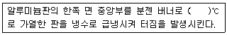

침투비파괴검사기사(구) (2010-03-07 기출문제)
1과목: 침투탐상시험원리
1. 침투액의 물리적 성질 중 침투력 자체에는 그다지 영향을 미치지 않으나 침투속도에는 크게 영향을 미치는 것은?
- 점성(viscosity)
- 비중(specific gravity)
- 적심능력(wetting ability)
- 표면장력(surface tension)
(정답률: 알수없음)

2. 현상제는 그 주요 성분에 따라 종류가 분류된다. 이에 대한 설명으로 옳은 것은?
- 습식 현상제 : 벤토나이트(Bentoniet), 활성백토 등에 습윤제, 계면활성제 등을 알콜계 용제에 현탁한 것
- 습식 현상제 : 벤토나이트(Bentoniet), 활성백토, 습윤제, 계면활성제 등을 오일 용제에 현탁한 것
- 속건식 현상제 : 산화마그네슘, 산화칼슘, 산화티탄 등을 알콜용제에 현탁한 것
- 속건식 현상제 : 산화마그네슘, 산화칼슘, 산화티탄 등을 물제에 현탁한 것
(정답률: 알수없음)
3. 다음은 침투탐상시험에 사용되는 알루미늄 비교시험편의 제조방법을 설명한 것이다. ( )안에 적합한 온도범위는?

- 300~330℃
- 410~430℃
- 510~530℃
- 600~630℃
(정답률: 알수없음)
4. 사용 중 생성되는 결함은?
- 겹침
- 기공
- 슬래그 개재물
- 응력 부식 균열
(정답률: 알수없음)
5. 침투탐상시험법 중 열처리를 하여 표면이 거친 대상물에 가장 적합한 시험 방법은?
- 수세성 형광침투탐상시험
- 후유화성 염색침투탐상시험
- 후유화성 형광침투탐상시험
- 용제제거성 염색침투탐상시험
(정답률: 알수없음)
6. 전처리 용제로 할로겐계 용제를 사용하였을 경우 어떤 재료는 이 용제와의 화학적 반응 때문에 사용을 제한하여야 하는데 이에 해당하는 재료는?
- 니켈(Ni)
- 마그네슘(Mg)
- 알루미늄(Al)
- 티타늄(Ti)
(정답률: 알수없음)
7. 전자포획 할로겐 검출기의 특성에 대한 설명으로 틀린 것은?
- 구성 물질에 해가 되는 가열전극이 없다.
- 가열양극법과 비교하여 교정이 안정적이다.
- 대기 중에 존재하는 불순물을 검출하는데 높은 강도를 갖는다.
- 일시적으로 감도가 감소되어도 과노출이나 사용 정도에 따라 교정이 변하거나 장비가 손상되지 않는다.
(정답률: 알수없음)
8. 1[atm]에 대한 단위의 환산이 틀린 것은?
- 7.6torr
- 14.7psi
- 101.3kPa
- 730mmHg
(정답률: 알수없음)
9. 각종 비파괴검사의 적용에 관한 설명으로 틀린 것은?
- 와전류탐상검사는 자성체의 내부결함 검사에 적용한다.
- 초음파탐상검사는 내부결함이나 불연속 검사에 적용한다.
- 침투탐상검사는 표면의 작은 균열이나 흠집 검출에 적용한다.
- 방사선투과검사는 내부의 결함이나 형태를 검사하는데 적용한다.
(정답률: 알수없음)
10. 자화곡선과 관련한 내용의 설명으로 옳은 것은?
- 항자력의 크기는 자화의 강도와 무관하다.
- 잔류자기가 많이 남게 되는 것은 저탄소강이다.
- 고탄소강과 같이 자화가 어려우누 재질은 투자율이 낮다.
- 투자율(μ)은 보자력과 함께 자계의 세기를 결정하게 된다.
(정답률: 알수없음)
11. 결함의 생성 중에는 검출이 용이하지만 결함의 생성이 접지된 상태에서는 검출이 어려운 비파괴검사는?
- 초음파(Ultrasonic)탐상시험
- 방사선(Radiography)투과시험
- 와전류(Eddy Current)탐상시험
- 음향반출(Acoustic Emission)시험
(정답률: 알수없음)
12. 일반적으로 매 검사마다 소모성 재료비가 가장 많이 소요되는 비파괴검사는?
- X선투과시험
- 와전류탐상시험
- 초음파탐상시험
- X선투과영상시험
(정답률: 알수없음)
13. 자분탐상시험과 비교하나 침투탐상시험의 장점은?
- 자분탐상시험에 비하여 표면하의 결함검출이 용이하다.
- 자분탐상시험에 비하여 자성체의 탐상에 신뢰도가 높다.
- 자분탐상시험에 비하여 표면의 원형결함 검출 강도가 높다.
- 자분탐상시험에 비하여 시간이 경과해도 지시모양의 변화가 없다.
(정답률: 알수없음)
14. 초음파탐상시험으로 알 수 없는 것은?
- 주파수의 측정
- 미세균열 검출
- 시험편의 두께
- 평균 입자의 크기
(정답률: 알수없음)
15. 침투탐상시험에서 침투액의 점성에 대한 설명 중 옳은 것은?
- 온도가 낮을수록 점성은 높아지고 침투시간은 길어진다.
- 온도가 낮을수록 점성은 낮아지고 침투시간은 짧아진다.
- 온도가 높을수록 점성은 높아지고 침투시간은 짧아진다.
- 온도가 높을수록 점성은 낮아지고 침투시간은 길어진다.
(정답률: 알수없음)
16. 결함 면적이 동일하다고 가정할 때 와전류탐상시험으로 가장 잘 검출할 수 있는 결함은?
- 와류가 흐르는 방향에 평행인 균열
- 봉의 외출 표면으로 뻗쳐 있는 방사상 균열
- 직경 5cm 봉의 중간(2.5cm) 부위에 있는 결함
- 직경 5cm 봉의 표면으로부터 2cm 깊이에 있는 방사상 균열
(정답률: 알수없음)
17. 초음파탐상시험의 장점에 대한 설명으로 틀린 것은?
- 라미네이션과 같은 결함탐상에 유용하다.
- 균열과 같은 미세한 결함을 검출할 수 있다.
- 검사되는 시험체의 두께에 대한 제한이 적다.
- 조대한 결정입자를 가진 시험체의 검사에 적합하다.
(정답률: 알수없음)
18. 프로드를 이용한 원형자화법에서 3인치 미만의 프로드 간격을 사용하지 않는 주된 이유는?
- 국부과열을 방지하기 위함이다.
- 시험자가 감전될 우려가 있기 때문이다.
- 전극 주위로 자분이 응집되기 때문이다.
- 아크 발생으로 인한 시험체의 소손을 방지하기 위함이다.
(정답률: 알수없음)
19. 서로의 관계가 반비례가 아닌 비례관계가 성립되는 것은?
- 주파수와 파장
- 방사능과 비방사능
- 전기저항과 전기전도도
- 표피효과와 전류의 침투깊이
(정답률: 알수없음)
20. 와전류탐상시험으로 검사가 어려운 것은?
- 내부결함 검사
- 관의 표면균열
- 도금두께 측정
- 관의 외경변화
(정답률: 알수없음)
2과목: 침투탐상검사
21. 다른 침투탐상검사와 비교하였을 때 후유화성 형광침투탐상검사의 가장 중요한 장점은?
- 과잉침투액 제거 용이
- 거친 표면검사에 용이
- 검사시간의 단축 용이
- 미세한 결함 검출 용이
(정답률: 알수없음)
22. 의사지시와 무관련지시를 구분할 때 대표적인 무관련지시의 원인으로 옳은 것은?
- 유화처리가 부적절하게 적용된 경우
- 세척처리가 적절하게 실시되지 않은 경우
- 표면상태가 침투탐상검사에 적합하지 않은 경우
- 부품의 형태, 구조 및 부분용접에 의해 싱기는 지시 모양의 경우
(정답률: 알수없음)
23. 침투탐상지시모양의 해석에 필요한 사항이 아닌 것은?
- 지시의 크기
- 침투제의 인화점
- 침투제 색의 강도
- 침투제의 퍼지는 양
(정답률: 알수없음)
24. 형광침투탐상에 사용되는 자외선등에서 발생되는 파장 중 눈에 가장 해로운 것은?
- 300mm
- 340mm
- 360mm
- 380mm
(정답률: 알수없음)
25. 건식현상법에 대한 설명으로 옳은 것은?
- 미세한 결함에 대한 검출 감도가 가장 높다.
- 염색침투탐상시험과 조합해서 적용하는 경우가 많다.
- 장소에 따라 현상제 분말이 비산할 수 있으므로 개방형 현상장치가 필요하다.
- 지시모양이 확대되지 않기 때문에 현상시간 종료 후 바로 관찰하여도 된다.
(정답률: 알수없음)
26. 재질, 시험체의 형태 및 불연속의 종류에 따라 서로 다른 침투시간이 요구된다. 일반적으로 넓고 얕은 불연속과 비교했을 때 미세한 균열에 요구되는 침투시간은?
- 더 짧게 한다.
- 더 길게 한다.
- 통일하게 한다.
- 침투시간은 줄이고 현상시간을 늘린다.
(정답률: 알수없음)
27. 침투액의 성능이 우수한가를 결정하는 2가지 대표적인 특정치는?
- 조도와 농도
- 입력과 접촉각
- 접촉각과 조도
- 표면장력과 점성
(정답률: 알수없음)
28. 의사지시의 원인이 될 가능성이 가장 높은 것은?
- 유화처리가 전반적으로 부족하였다.
- 습식현상법에서 건조온도가 너무 높았다.
- 시험체 형상은 단순하지만 표면이 거칠다.
- 녹, 스케일 등의 부착물이 표면에 남아 있었다.
(정답률: 알수없음)
29. 휴대하기 좋고 전기가 없는 야외나 특정 구역에서 수행하기 적합한 침투탐상검사 방법은?
- 수세성 형광침투탐상검사
- 후유화성 형광침투탐상검사
- 용제제거성 염색침투탐상검사
- 용제제거성 형광침투탐상검사
(정답률: 알수없음)
30. 침투액의 침투속도를 증가시키기 위한 조건으로 옳은 것은?
- 온도가 낮을수록 좋다.
- 접촉각이 클수록 좋다.
- 표면장력이 작을수록 좋다.
- 점성계수가 작을수록 좋다.
(정답률: 알수없음)
31. 침투탐상검사시 의사지시가 나타날 가능성이 가장 높은 경우는?
- 과도하게 세척한 경우
- 침투액이 차가운 경우
- 현상제의 양이 미흡한 경우
- 전처리 부족 또는 거친 표면인 경우
(정답률: 알수없음)
32. 침투탐상제를 이용한 누설검사 방법의 과정을 옳게 설명한 것은?
- 현상처리는 침투액을 도포한 반대면에 속건식현상제를 적용한다.
- 전처리는 의사지시모양의 영향을 고려해서 철저히 해야 된다.
- 침투액은 붓이나 분무로 하되 시험체 양쪽 면에 적용하여야 한다.
- 관찰은 반드시 확대경 등 보조 확대기구를 사용하여야 한다.
(정답률: 알수없음)
33. 알칼리성 세척제로 가장 잘 제거되는 오염물은?
- 물
- 기름
- 그리이스
- 녹이나 스케일
(정답률: 알수없음)
34. 침투탐상검사 방법의 선정시 고려하지 않아도 되는 것은?
- 시험체의 재질
- 시험체의 두께
- 탐상면의 거칠기
- 작업성 및 경제성
(정답률: 알수없음)
35. 수도 및 전원 설비가 없는 장소에서 침투탐상검사를 실시할 경우 어느 침투액을 사용하는 것이 좋은가?
- 용제제거성 염색침투액
- 용제제거성 형광침투액
- 후유화성 염색침투액
- 후유화성 형광침투액
(정답률: 알수없음)
36. 침투탐상검사시 시험체의 과도한 건조가 바람직하지 않은 가장 큰 이유는?
- 많은 시간이 소비되므로
- 시험감도가 저하될 수 있으므로
- 현상제의 흡수능력이 상실되므로
- 과잉 침투액의 제거가 어려우므로
(정답률: 알수없음)
37. 침투탐상검사에서 고감도 형광침투액을 사용할 때 적용할 수 있으며 염색침투탐상에는 적용하지 않는 현상법은?
- 무현상법
- 건식현상법
- 습식현상법
- 속건식현상법
(정답률: 알수없음)
38. 침투탐상검사에서 고온의 열에 방치되었던 세라믹 제품에 나타난 지시로서, 망상모양(그물모양)의 서로 교차한 선으로 나타나는 지시는 무엇 때문에 발생한 것인가?
- 열충격에 의해 발생
- 피로균열에 의해 발생
- 수축균열에 의해 발생
- 연삭균열에 의해 발생
(정답률: 알수없음)
39. 스테인리스강, 티타늄 합금강에 대해 탐상을 하는 경우 탐상제에 함유된 어떤 성분이 부식이나 취성을 유발할 수 있는가?
- C
- Cl
- Ni
- Si
(정답률: 알수없음)
40. 표면거칠기가 거칠은 경우 가장 적용하기 곤란한 침투탐상검사 방법은?
- 수세성 형광침투탐상검사
- 수세성 염색침투탐상검사
- 후유화성 형광침투탐상검사
- 용제제거성 염색침투탐상검사
(정답률: 알수없음)
3과목: 침투탐상관련규격
41. 항공우주용 기기의 침투탐상 검사방법(KS W 0914)에 다른 친유성 유화제의 적용과 체류에 대한 내용 중 틀린 것은?
- 구성부품의 표면에 적용하고 있는 동안은 교반해서는 안 된다.
- 적용 방법은 스프레이, 붓칠에 의하고 침지, 흘림을 적용하면 안 된다.
- 특별한 지시가 없는 한 최대 체류시간은 형광 침투액계는 3분 동안으로 하여야 한다.
- 특별한 지시가 없는 한 최대 체류시간은 염색 침투액계는 30초 동안으로 하여야 한다.
(정답률: 알수없음)
42. 보일러 및 압력용기에 대한 침투탐상검사(ASME Sec.V Art.6)에서 후유화성 침투제는 침투시간이 지나고 유화처리 전에 물스프레이를 이용하여 예비세척을 한다. 이 때 예비 세척시간은 몇 분을 초과할 수 없는가?
- 1분
- 5분
- 30분
- 60분
(정답률: 알수없음)
43. 항공우주용 기기의 침투탐상 검사방법(KS W 0914)에서 액체산소와 양립할 수 있는 재료에 대한 침투 탐상제는 몇 J 이상의 충격감도시험을 합격한 것이라야 하는가?
- 65
- 75
- 85
- 95
(정답률: 알수없음)
44. 항공우주용 기기의 침투탐상 검사방법(KS W 0914)에서 탐상시험을 하여 합격된 시험체에는 합격표시를 하여야 한다. 그 표시방법에 해당되지 않는 것은?
- 에칭
- 각인
- 도금
- 꼬리표
(정답률: 알수없음)
45. 보일러 및 압력용기에 대한 침투탐상검사(ASME Sec.V Art.6)에서 용접부 검사를 수행할 때 검사 부위와 그 부위에서 양쪽으로 최소 몇 인치 이내를 전처리하도록 요구하는가?
- 0.5인치
- 1인치
- 3인치
- 5인치
(정답률: 알수없음)
46. 보일러 및 압력용기에 대한 표준침투탐상검사(ASME Sec.V Art.24 SE-165)에 의한 침투제의 적용에 대한 설명으로 틀린 것은?
- 작은 부품은 침투액이 들어 있는 적당한 액조 또는 탱크에 담근다.
- 크고 복잡한 형태의 부품은 솔질이나 스프레이로 침투액을 적용한다.
- 에어로졸 스프레이는 효과적이고 편리하지만 배기장치가 필요하다.
- 전기스프레이는 부품상에 과도한 침투액의 축적을 일으킨다.
(정답률: 알수없음)
47. 보일러 및 압력용기에 대한 침투탐상검사(ASME Sec.V Art.6)에 따라 니켈합금을 검사할 경우 모든 탐상제는 유황함유량을 분석하여야 하는데 무게비로 유황함유량은 몇 %를 초과할 수 없는가?
- 1%
- 2%
- 3%
- 5%
(정답률: 알수없음)
48. 비파괴검사-침투탐상검사-일반원리(KS B ISO 3452)에서 규정한 검사 및 판독에 대한 설명으로 틀린 것은?
- 재시험이 필요한 경우 동일한 탐상제로 시험하여야 한다.
- 재시험이 필요한 경우 동일한 세척 공정으로 시험하여야 한다.
- 시험 표면의 검사시 염색 침투액을 사용하는 경우 조도는 100룩스 이상의 조명이어야 한다.
- 시험 표면의 검사시 형광 침투액을 사용하는 경우 검사 전 눈이 주위의 어두움에 익숙하도록 최소 5분 이상 기다려야 한다.
(정답률: 알수없음)
49. 침투탐상 시험방법 및 침투지시모양의 분류(KS B 0816)에서 잉여 침투액의 제거방법에 따른 분류 중 기호 A가 의미하는 것은?
- 수세에 의한 방법
- 용제 제거에 의한 방법
- 물베이스 유화제를 사용하는 후유화에 의한 방법
- 기름베이스 유화제를 사용하는 후유화에 의한 방법
(정답률: 알수없음)
50. 침투탐상 시험방법 및 침투지시모양의 분류(KS B 0816)에 따른 분산결함의 설명으로 옳은 것은?
- 갈라짐 이외의 결함으로 선상결함이 아닌 것
- 정해진 면적 안에 존재하는 1개 이상의 결함
- 갈라짐 이외의 결함으로 그 길이가 나비의 3배 이상
- 거의 동일 직선상에 존재하고 상호거리가 가까운 것
(정답률: 알수없음)
51. 보일러 및 압력용기에 대한 침투탐상검사(ASME Sec.V Art.6 App.Ⅲ)에서 표준온도 범위내에서 검사를 수행할 수 없을 때 비교시험편을 제작하여 비교할 수 있다. 이 비교시험편의 두께와 재질로 옳은 것은?
- 3/8인치, 알루미늄
- 5/8인치, 알루미늄
- 3/8인치, 스테인리스강
- 5/8인치, 스테인리스강
(정답률: 알수없음)
52. 침투탐상 시험방법 및 침투지시모양의 분류(KS B 0816)에 따른 독립결함에 해당되지 않는 것은?
- 갈라짐
- 선상 결함
- 원형상 결함
- 분산 결함
(정답률: 알수없음)
53. 침투탐상 시험방법 및 침투지시모양의 분류(KS B 0816)에서 동합금판에 니켈도금과 크롬도금을 한 후 인공결함을 발생시킨 대비시험편의 명칭은?
- A형
- B형
- C형
- D형
(정답률: 알수없음)
54. 보일러 및 압력용기에 대한 침투탐상검사(ASME Sec.V Art.6)에서 플라스틱 제품의 균열을 검출하기 위하여 권고하고 있는 침투제의 최소 침투시간(dwell time)은?
- 5분
- 7분
- 10분
- 15분
(정답률: 알수없음)
55. 보일러 및 압력용기에 대한 침투탐상검사(ASME Sec.V Art.6)에 따른 규정된 표준 온도 범위로 옳은 것은?
- 0~20℃
- 5~52℃
- 25~60℃
- 40~125℃
(정답률: 알수없음)
56. 컴퓨터의 기종에 관계없이 웹페이지를 작성하는 언어를 가리키는 말로서 여러 가지 태그를 이용하여 문단 형식이나 표, 글자, 크기를 지정하는 것은?
- 하이퍼텍스트(Hypertext)
- 하이퍼미디어(Hypermedia)
- HTML(Hyper Text Markup Language)
- HTTP(Hyper Text Transfer Protocol)
(정답률: 알수없음)
57. 데이터통신 시스템 중 데이터 터미널 장치(DTE)의 기능이 아닌 것은?
- 입ㆍ출력 기능
- 신호 변환 기능
- 전송 제어 기능
- 기억 기능
(정답률: 알수없음)
58. 컴퓨터 운영체제에서 링커(linger)의 역할은?
- 원시 프로그램을 기계어로 번역한다.
- 목적 프로그램을 실행하기 위해 메모리에 적재한다.
- 여러 개의 목적 모듈을 모아서 실행 가능한 프로그램으로 만든다.
- 인터럽트 발생 시 인터럽트 처리 루틴으로 제어권을 부여한다.
(정답률: 알수없음)
59. 네트워크에서 도메인이나 호스트 이름을 숫자로 된 IP 주소로 해석해주는 TCP/IP 서비스는?
- DNS
- Protocol
- Router
- ARPANET
(정답률: 알수없음)
60. 오류의 검출과 교정까지 가능한 코드는?
- 자기 보수 코드
- 가중치(Weighted) 코드
- 오류 검출 코드
- 해밍(Hamming) 코드
(정답률: 알수없음)
4과목: 금속재료학
61. 기계구조용 강에서 마텐자이트를 뜨임 제1단계에서 실시하여 인장강도 140kgf/mm2 이상, 항복점 120kgf/mm2 이상의 기계적 성질을 갖도록 한 강을 무엇이라 하는가?
- 초강인강
- 마르에이징강
- 기계구조용 탄소강
- 기계구조용 저합금강
(정답률: 알수없음)
62. 다음 중 백금(Pt)에 대한 설명으로 옳은 것은?
- 백금은 회백색의 체심입방정 금속이다.
- 미중은 6.7이고, 용융점은 670℃ 정도이며 내식성이 좋으므로 화학공업에 사용한다.
- 백금은 산화되지 않으나 P, S, Si 등의 알칼리, 알칼리토금속의 염류에는 침식된다.
- 45%~85%RH 합금은 열전대로 사용하며, 0.8%~5%Pd 의 백금합금은 장식용으로 사용한다.
(정답률: 알수없음)
63. Ti의 기계적 성질에 대한 설명으로 틀린 것은?
- 불순물에 의한 영향이 크다.
- 연심입방금속이므로 소성변형의 제약이 많다.
- 내력/인장강도의 비가 1에 가깝다.
- 상온에서 300℃ 근방의 온도 구역에서도 강도의 저하가 뚜렷하게 나타난다.
(정답률: 알수없음)
64. 비정질 금속을 제조하는 방법이 아닌 것은?
- 원심 급냉법
- 침지법
- 진공 종착법
- 전기 또는 화학도금법
(정답률: 알수없음)
65. 금속의 냉간가공(cold working)시 나타나는 성질로 옳은 것은?
- 인장강도가 감소한다.
- 전기전도도가 감소한다.
- 단면수축률이 증가한다.
- 화학반응성이 감소한다.
(정답률: 알수없음)
66. 다음의 첨가 원소 중 강의 경화능을 가장 향상시키는 원소는?
- Sn
- Si
- Cu
- Mn
(정답률: 알수없음)
67. Al 및 그 합금의 질별 기호에서 H 가 의미하는 것은?
- 제조한 그대로인 것
- 풀림을 한 것
- 가공 경화한 것
- 용체화 처리한 것
(정답률: 알수없음)
68. 다음 중 가단주철의 종류에 속하지 않는 것은?
- 백심 가단주철
- 흑심 가단주철
- 펄라이트 가단주철
- 편상 흑연 가단주철
(정답률: 알수없음)
69. 황동 합금 중에서 조직이 α+ β이므로 상온에서 전연성이 낮으나 강도가 크고, 6:4 황동이라 불리우는 합금은?
- 문쯔 메탈(muntz metal)
- 카트리즈 브라스(cartridge brass)
- 길딩 메탈(gilding metal)
- 로우 브라스(low brass)
(정답률: 알수없음)
70. 금속을 원자로용, 고융점구조재료, 반도체, 알칼리토류군(群)으로 분류할 때 반도체군에 해당되는 것은?
- W, Re
- Na, Li
- Ge, Si
- U, Th
(정답률: 알수없음)
71. 순철의 자기 변태점에 대한 설명으로 옳은 것은?
- 가열에 의해 BCC 격자가 FCC 격자로 변한다.
- A2변태라 하며 약 768℃에서 일어난다.
- A3변태라 하며 약 910℃에서 일어난다.
- A4변태라 하며 약 1200℃에서 일어난다.
(정답률: 알수없음)
72. Mg 합금이 구조재료로서 갖는 특성에 관한 설명으로 틀린 것은?
- 소성가공성이 높아 상온변형이 쉽다.
- 비강도가 커서 항공우주용 재료에 유리하다.
- 감쇠능이 주철보다 커서 소음방지 재료로 우수하다.
- 기계가공성이 좋고 아름다운 절삭면이 얻어진다.
(정답률: 알수없음)
73. 상온에서 BCC(body-centered cubic lattice)의 결정구조인 것은?
- Ag, Au, V, Be
- Ba, Fe, K, V
- Zn, Zr, La, Mg
- Al, Fe, Cu, Co
(정답률: 알수없음)
74. 심냉(Sub-zero)처리를 실시하는 이유로 옳은 것은?
- 오스테나이트를 펄라이트로 변태시키기 위하여
- 펄라이트를 마텐자이트로 변태시키기 위하여
- 잔류 오스테나이트를 마텐자이트로 변태시키기 위하여
- 트루스타이트를 마텐자이트로 변태시키기 위하여
(정답률: 알수없음)
75. 고속도공구강의 특징을 설명한 것 중 틀린 것은?
- 고온경도 및 내마모성이 크며 인성으르 가진다.
- 템퍼링 처리에 의해 2차 경화하는 성질이 있다.
- W계 고속도공구강의 기본 조성은 18%W-4%Cr-1%V 이다.
- 절삭성은 우수하나 경도, 강도는 탄소강보다 낮다.
(정답률: 알수없음)
76. 오스테나이트계 스테인리스강의 부식 중 공식(pitting)은 부동태 피막을 극부적으로 파괴 또는 관통하는 것을 말하는데, 이러한 공식을 방지하기 위한 대책으로 틀린 것은?
- 할로겐 이온의 농도를 많게 한다.
- 질산염, 크롬산염 등을 첨가한다.
- 산소농담전지의 형성을 피하거나 부식생성물을 제거한다.
- 재료 중 C를 적게 하거나 Ni, Cr, Mo 등을 많게 한다.
(정답률: 알수없음)
77. 시효처리에 대한 설명으로 틀린 것은?
- 과포화 고용체를 이용한 제2상의 석출과정이다.
- 온도가 높거나 시간이 길면 복원현상이 나타난다.
- 시효처리는 온도의 증가에 따른 취성증대가 목표이다.
- Al-Cu 합금의 석출과정은 과포화고용체→G.P대→중간상→안정상 순이다.
(정답률: 알수없음)
78. 판재를 원판으로 뽑기 위해 하중 9300kg을 가했을 때의 전단응력은 약 몇 kgf/cm2인가? (단, 원판의 직경은 30mm, 판재의 두께는 2.7mm이다.)
- 3455
- 3655
- 3855
- 4⑤5
(정답률: 알수없음)
79. 일반구조용강에서 청열취성의 원인이 되는 고용 성분은?
- N
- V
- Al
- Nb
(정답률: 알수없음)
80. 60%Cu-35%Zn-5%Al의 조성을 가진 합금에서 겉보기의 아연 함유량은 몇 % 인가? (단 Al의 아연 당량은 6이다.)
- 28%
- 32%
- 48%
- 52%
(정답률: 알수없음)
5과목: 용접일반
81. 가스용접에 이용되는 가연성 가스 종류 중 연소시 가장 많은 산소(O2)를 필요로 하는 것은?
- 아세틸렌
- 수소
- 프로판
- 메탄
(정답률: 알수없음)
82. 프로젝션 용접법의 특징 설명으로 가장 적합한 것은?
- 전극의 수명이 짧고, 작업 능률이 낮다.
- 얇은 판과 두꺼운 판의 용접은 불가능하다.
- 여러 가지 변형적인 저항용접이 불가능하다.
- 2개 이상의 돌기부를 1회에 용접할 수 있으므로 용접속도가 빠르다.
(정답률: 알수없음)
83. 용접전류 500A로 10초간 용접하여 A의 제품을 형성하였다. 이 때 A의 고유 전기저항을 0.5Ω라 하면 이 때의 전기 저항열은?
- 100kcal
- 10kcal
- 300kcal
- 350kcal
(정답률: 알수없음)
84. 직류 및 교류 아크 용접기의 비교 내용 중 직류 용접기에 대한 설명으로 틀린 것은?
- 교류 용접기보다 무부하 전압이 낮다.
- 교류 용접기에 비해 자기 쏠림 현상이 거의 없다.
- 교류 용접기에 비해 아크 안정성이 우수하다.
- 교류 용접기에 비해 역율이 양호하다.
(정답률: 알수없음)
85. 아크 전압 30V, 아크 전류 200A, 용접속도 10cm/min으로 피복 아크 용접을 할 경우 발생하는 용접입열은 얼마인가?
- 3600 J/cm
- 36000 J/cm
- 6000 J/cm
- 60000 J/cm
(정답률: 알수없음)
86. 용접법 주우 융접에 속하는 것은?
- 초음파 용접
- 유도 가열 용접
- 전자 빔 용접
- 심 용접
(정답률: 알수없음)
87. 전기저항 용접 중 이음형상이 겹치기 용접에 해당되지 않는 것은?
- 점 용접
- 프로젝션 용접
- 메시 심 용접
- 업셋 용접
(정답률: 알수없음)
88. 용접보의 용융속도를 가장 잘 설명한 것은?
- 단위시간당 소비되는 모재의 무게
- 단위시간당 소비된 용접보의 길이 또는 무게
- 일정량의 모재가 소비될 때까지의 시간
- 일정길이의 용접봉이 소비될 때까지의 시간
(정답률: 알수없음)
89. 가스용접봉의 성분이 모재에 미치는 영향을 잘못 설명한 것은?
- 탄소(C) - 강의 강도, 연신율, 굽힘성이 감소된다.
- 규소(Si) - 기공은 막을 수 있으나 강도가 떨어진다.
- 인(P) - 강에 취성을 주고 가연성을 잃게 한다.
- 황(S) - 용접부의 저항력을 감소시키고 기공 발생의 원인이 된다.
(정답률: 알수없음)
90. 피복 아크 용접에서 직류정극성의 특징으로 틀린 것은?
- 비드 폭이 좁다.
- 모재의 용입이 깊다.
- 열 분배는 용접봉에 30%, 모재에 70% 정도이다.
- 박판, 주철, 합금강, 비철금속의 용접에만 쓰인다.
(정답률: 알수없음)
91. 용접부의 취성파괴에 대한 일반적인 특징 설명으로 가장 적합한 것은?
- 파단은 판 표면에서의 45° 각도로 발생한다.
- 항복점 이하의 평균응력에서는 발생하지 않는다.
- 온도가 높을수록 발생하기 쉽다.
- 취성파괴의 기점은 응력과 변형이 집중하는 곳에서부터 발생한다.
(정답률: 알수없음)
92. 용접 중에 아크를 중단시키면 중단된 부분이 오목하거나 납작하게 파진 모습으로 남는 것을 무엇이라고 하는가?
- 오버 랩
- 기공
- 크레이터
- 선상조직
(정답률: 알수없음)
93. 피복 금속 아크 용접봉 E4316은 어떤 계통의 용접봉인가?
- 저수소계
- 천분수소계
- 철분산화철계
- 고산화티탄계
(정답률: 알수없음)
94. 용접부의 자분 탐상검사에 사용되는 자분에 착색된 색의 종류가 아닌 것은?
- 백색
- 흑색
- 적색
- 회색
(정답률: 알수없음)
95. 내용적 40ℓ의 산소용기에 140 기압의 산소가 들어 있다. 가변압식 토치로 400번 팀을 사용하여 혼합비 1:1의 표준 불꽃으로 작업하면 몇 시간 작업할 수 있는가?
- 7시간
- 9시간
- 12시간
- 14시간
(정답률: 알수없음)
96. 황동 합금성분 중 경납땜 재료로 사용할 수 없는 것은?
- Cu 60%-Zn 40%
- Cu 55%-Zn 45%
- Cu 50%-Zn 50%
- Cu 30%-Zn 70%
(정답률: 알수없음)
97. 판 두께 9mm, 루트간격 1.59mm인 연강판을 49mm 용접봉으로 피복 아크 용접 아래보기 V형 맞대기 이음 시 용접 전류로 가장 적당한 것은?
- 80~100A
- 100~130A
- 140~160A
- 180~200A
(정답률: 알수없음)
98. 서브머지드 아크 용접법의 장점 설명으로 틀린 것은?
- 용입이 깊다.
- 비드 외관이 매우 아름답다.
- 용융속도 및 용착속도가 빠르다.
- 적용재료에 제한을 받지 않는다.
(정답률: 알수없음)
99. 가스용접용 토치는 사용하는 아세틸렌가스 압력에 의하여 저압식, 중압식, 고압식으로 나누어진다. 저압식 토치의 아세틸렌 공급압력으로 가장 적합한 것은?
- 2.⑤kgf/cm2 이상
- 0.07kgf/cm2 미만
- 0.4kgf/cm2 이상
- 1.5kgf/cm2 이상
(정답률: 알수없음)
100. 용접부 비파괴검사에서 형광침투검사의 조작순서가 가장 적합한 것은?
- 검사면세척 - 침투액적용 - 침투액세척 - 현상액 적용과 건조 - 검사
- 검사면세척 - 현상액 적용과 건조 -침투액세척 - 침투액적용 - 검사
- 검사면세척 - 침투액세척 - 현상액 적용과 건조 -침투액적용 - 검사
- 검사면세척 - 침투액적용 - 현상액 적용과 건조 -침투액세척 - 검사
(정답률: 알수없음)